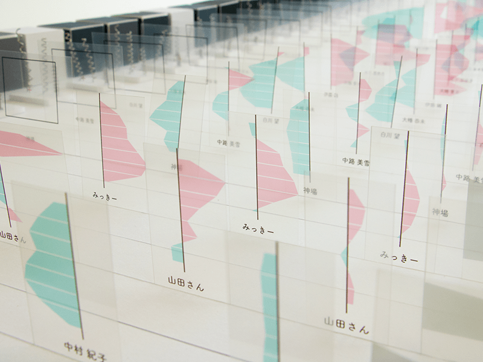
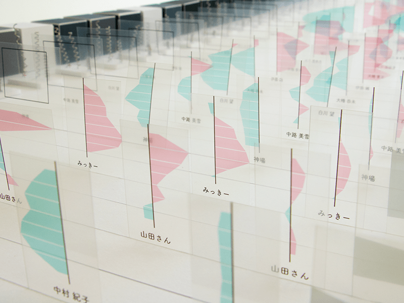

2年 3D表現演習
つまむかたち×たのしい楽器

つまむかたち×たのしい楽器

人の指の形にフィットするつまみの形を検証し、そのつまみのデザインを起点にした、既存の楽器(シェイカーとカスタネット)の新しいかたちを提案します。小さなこどもが扱うことを想定し、おもちゃのような色使いと丸みのある形に仕上げました。
人の指の形にフィットするつまみの形を検証し、そのつまみのデザインを起点にした、既存の楽器(シェイカーとカスタネット)の新しいかたちを提案します。小さなこどもが扱うことを想定し、おもちゃのような色使いと丸みのある形に仕上げました。